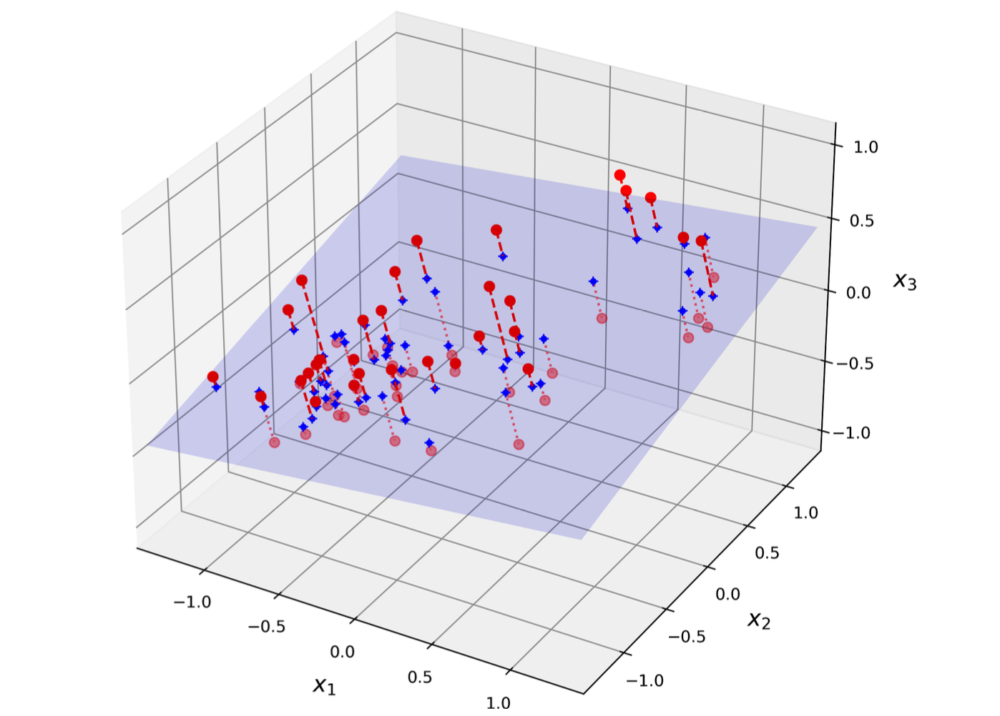
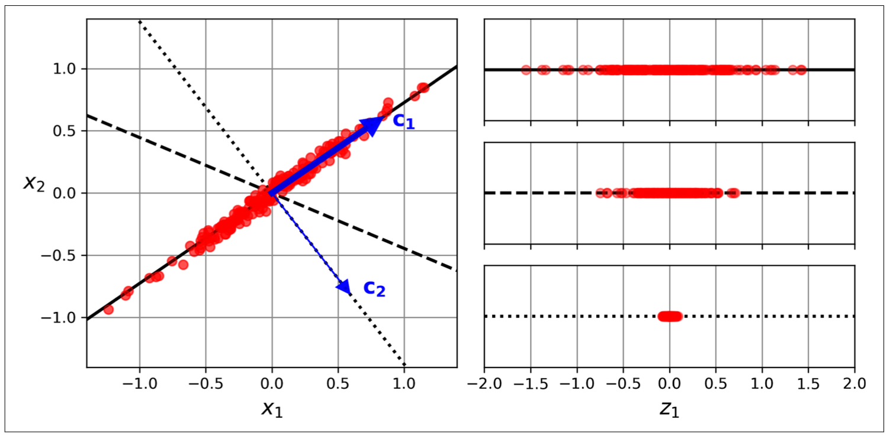
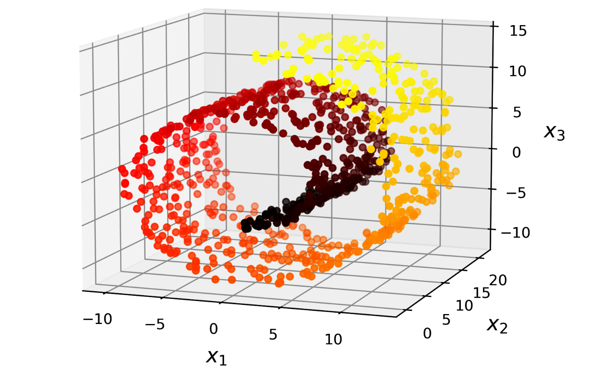
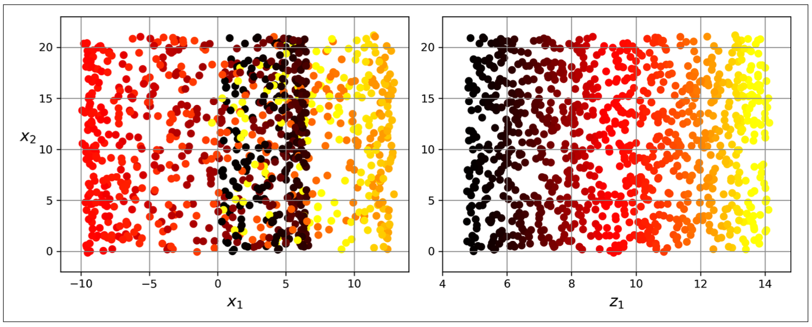
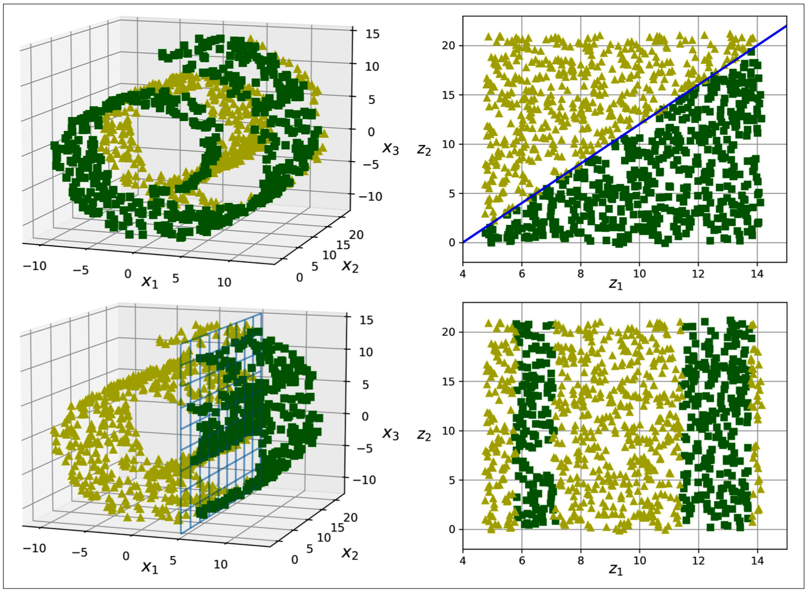

from sklearn.datasets import fetch_openml
from sklearn.decomposition import PCA
# mnist = fetch_openml('mnist_784', as_frame=False)
# X_train, y_train = mnist.data[:600], mnist.target[:600]
# X_test, y_test = mnist.data[600:1200], mnist.target[600:1200]
# pca = PCA(n_components=0.95) # choose n_components that preserve ~ 95% variance of data
# X_reduced = pca.fit_transform(X_train)
# print(f'Number of components: {pca.n_components_}')10 Dimensionality Reduction
Dimensionality reduction tends to trade lower performance to get higher training speed and easier visualization. However, it makes the pipeline more complex and may not effective. Therefore, we first try to train our system with the original data before considering using dimensionality reduction.
There are 2 main approaches: projection (PCA, random projection) and manifold learning (locally linear embedding).
10.1 The Curse of Dimensionality
Because of the huge number of spaces in high dimensions, high-dimensional datasets are at risk of being very sparse: most training instances are likely to be far away from each other. Therefore, a new instance will likely be far away from any training instance, making predictions much less reliable than in lower dimensions, since they will be based on much larger extrapolations. In short, the more dimensions the training set has, the greater the risk of overfitting it.
10.2 Projection
Suppose that we want to turn a 3D dataset into 2D (called subspace), we will project all instances perpendicularly onto this subspace.

10.2.1 PCA
PCA first identifies the righ hyperplane that lies closest to the data, and then it projects the data onto it. This hyperplane preserves maximum variance and minimizes the mean squared distance between the original dataset and its projection.

How does PCA do that?
- Center the data (minus mean).
- Find an axis (principle component) accounts for the largest amount of variance.
- Each next priciple components orthogonal to the previous one accounting for the largest amount of the remaining variance.
To find the principle components, PCA use SVD technique (singular value decomposition) that decompose data X into UΣV⊺ where V⊺ contains the unit vectors that define all the principal components.
\[X = UΣV^T\]
Then, we multiply matrix X with V⊺ to get the lower-dimension data.
\[X_d = XV^T\]
Hyperparameter: n_components, svd_solver
Attribute of PCA: components_, explained_variance_ratio_, n_components_
Choose the right number of dimensions by setting the n_components hyperparameter.
Tuning the n_components hyperparameter to compress the data.
import numpy as np
from sklearn.pipeline import Pipeline
from sklearn.ensemble import RandomForestClassifier
from sklearn.model_selection import RandomizedSearchCV
pipe = Pipeline([
('pca', PCA(random_state=29)),
('classifier', RandomForestClassifier(random_state=29))
])
params = {
'pca__n_components': np.arange(10,15),
'classifier__n_estimators': [50,60,70]
}
grid = RandomizedSearchCV(estimator=pipe, param_distributions=params, cv=5, scoring='accuracy', random_state=29)
# grid.fit(X_train, y_train)
# print(f'Best params: {grid.best_params_}')Decompress the transformed data.
\[X_{recovered} = X_dV^T\]
# X_recovered = pca.inverse_transform(X_reduced)Randomized PCA: svd_solver=‘random’; quickly find an approximation of d principle components, auto if max(m,n)>500 and n_components < 80% of min(m,n).
# rand_pca = PCA(n_components=154, svd_solver='randomized', random_state=29)
# X_reduced = rand_pca.fit_transform(X_train)Incremental PCA: use np.array_split, partial_fit; fit mini-batch of data
from sklearn.decomposition import IncrementalPCA
n_batches = 100
inc_pca = IncrementalPCA(n_components=154)
# for batch in np.array_split(X_train, n_batches):
# inc_pca.fit(batch)
# X_reduced = inc_pca.transform(X_train)10.2.2 Random Projection
For very high-dimension dataset, PCA can be too slow. Therefore, random projection is solution. It works by implementing random linear projection.
- Choose the optimal number of dimensions by sklearn.random_projection.johnson_lindenstrauss_min_dim: compute minimum number of dimensions to ensure the squared distance between any two instances to change by more than a tolerance.
\[d ≥ 4log(m)\frac{1}{(\frac{1}{2}ε2 - \frac{1}{3}ε3)}\]
d: target dimension
m: number of instances
ε: tolerance
2. Generate a random matrix P of shape [d,n] (n: number of features), from a Gaussian distribution with mean 0 and variance 1/d.
3. Reduced matrix = X @ P.T
from sklearn.random_projection import GaussianRandomProjection
gauss_rand_prj = GaussianRandomProjection(eps=0.1, random_state=29)
# X_reduced = gauss_rand_prj.fit_transform(X_train)10.2.3 Sparse Random Projection
Work as same as random projection, except the random matrix is sparse, so that it use much less memory and train much faster and is preferred.
10.3 Manifold Learning
In many cases the subspace may twist and turn, projection is not useful Figure 10.3. Simply projecting onto a plane (e.g., by dropping x3) would squash different layers together (Figure 10.4, left). Instead, we will unroll to obtain the 2D dataset (Figure 10.4, right).


The roll is an example of 2D manifold. Generally, a d-dimensional manifold is a part of an n-dimensional space (where d < n) that locally resembles a d-dimensional hyperplane.
However, manifold learning may not always lead to a better or simpler solution, it all depends on dataset.

10.3.1 LLE (Locally Linear Embedding)
LLE is used for nonlinear task, do not scale well.
- Measuring how each training instance linearly relates to its nearest neighbors (k-nearest neighbors).
- Find low-dimensional data where these local relationships are best preserved.
from sklearn.datasets import make_swiss_roll
from sklearn.manifold import LocallyLinearEmbedding
X_swiss, t = make_swiss_roll(n_samples=1000, noise=0.2, random_state=42)
lle = LocallyLinearEmbedding(n_components=2, n_neighbors=10, random_state=42)
# X_unrolled = lle.fit_transform(X_swiss)